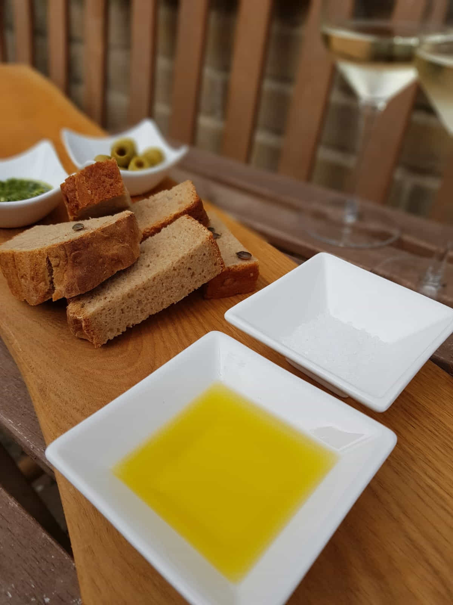

Brood gedoopt in olijfolie en zeezout
Op steeds meer terrasjes kom je het tegen, een lekker broodje met erbij een
schaaltje olie en wat zeezout. Echt genieten van de zuivere smaken van de olie en het brood!
Je kunt natuurlijk bij de bakker of supermarkt lekker brood halen en dit gebruiken.
Nog lekkerder is het om zelf een brood bakken. Heerlijk genieten van de lekkere smaken en je huis ruikt
ook nog eens heerlijk naar echt vers brood.
Ingrediënten
- 500 gram bloem
- 5 gram zout
- 7 gram droge gist
- 320 ml lauw warm water
Bereidingswijze
- Doe de bloem, het zout en de gist in de kom en meng het door elkaar. Ik gebruik een keukenmachine
voor het kneden maar het kan ook met de hand. Kneed dan minstens 10-15 minuten totdat het deeg klaar
is en je er een dun vliesje van kan trekken.
- Stop de deegbal in een kom die je besprenkeld hebt met bloem en dek af met een theedoek en zet de
kom op een warme plek weg om 1 uur te rijzen.
- Doe het deeg in een ingevet broodblik en zet nog een uurtje weg om nogmaals te rijzen. Verwarm de
oven tijdig voor naar 200 graden zodat het broodblik direct erin kan als het deeg genoeg gerezen is.
- Bak het brood in ongeveer 40 minuten bruin.
- Als het brood klaar is, laat het dan even afkoelen op een rooster. Tijdens het afkoelen kun je
alvast de olie en het zout klaar zetten, serveer deze in mooie schaaltjes en snijd het brood in
plakken en snijd de plakken in reepjes en dien het geheel op.

Tip Lekker met meergranenstokbrood. Vergeet niet genoeg zout er op te doen.